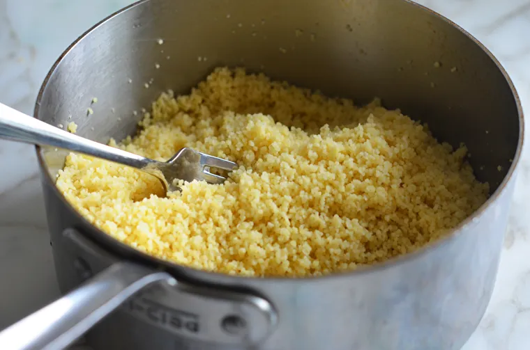

Couscous

Description
Couscous is a North African dish made from tiny steamed balls of semolina flour. Though we think of it and cook it as a grain, it is actually a type of pasta.
Ingredients
- olive oil
- couscous
- butter
- salt
Steps
- To start, bring the cooking liquid (preferably a flavorful chicken or vegetable broth) to a boil in a medium pot.
- add the couscous
- Take the pan off the heat, cover, and let the couscous steam for 5 minutes.
- Use a fork to fluff it up and break up the clumps for light and fluffy couscous.